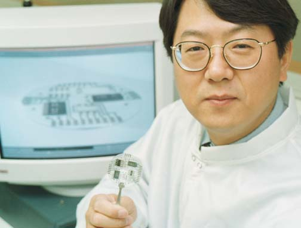

IEEE Sensors Council
|
ANNOUNCEMENTS |
-
Congratulations to our 2009 IEEE Sensors Council award Winners!
The IEEE Sensors Journal Best Paper Award recognizes the best paper published in the IEEE Sensors Journal. It is based on general quality, originality, contributions, subject matter and timeliness. The award is a certificate and $2,000 split equally among authors.
The 2009 winning paper is:
Title: A polymer microfluidic chip with interdigitated electrodes arrays for simultaneous dielectrophoretic manipulation and impedimetric detection of microparticles.Authors: Zou ZW, Lee S, Ahn CH
 Chong Ahn Zhiwei Zou SooHyun Lee -
IEEE SENSORS JOURNAL, Volume: 8 Issue: 5-6 Pages: 527-535 Published: MAY-JUN 2008.
Citation: "The paper presents an early example of an important and growing topic in microfluidic devices, the exploration of coupling of several actuating and sensing elements. The work offers a set of new analysis methods for microparticles, resulting in a much faster analysis with very small samples. "
Cited from IEEE Sensors Journal